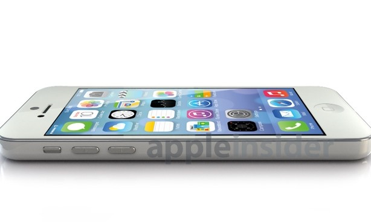

低价iPhone渲染图：喜欢不
低价版iPhone的三围尺寸泄露后，AppleInsider根据这些数据渲染了其3D模型。如果数据无误，它基本就是这个样子了： 底部的扬声器、麦克风都是圆形开孔，很像现在的iPod touch，甚至有点像iOS 7里新设计的信号指示器，颇有软硬件和一的感觉。 它和iPhone 5一样配备闪电接口并放置在底部，螺丝分列左右。耳机孔同样在底部。  左侧是电源键和音量键，iPod touch一样类似胶囊的圆角方形，而不像iPhone 5的圆形。 背部是弯曲的，有点经典版iPod的样子。 不过需要注意的是，平面尺寸图无法反映立体样式，所以细节方面仍旧是假想推断的为主，苹果最终发布的几乎肯定会有所不同。 不管怎样，各大iPhone配件厂商对泄露的低价iPhone尺寸图都深信不疑，已经基于此开始设计新的附件了。